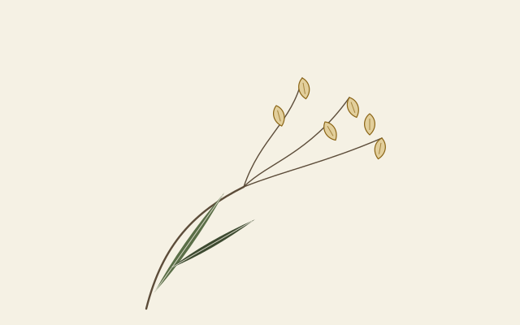
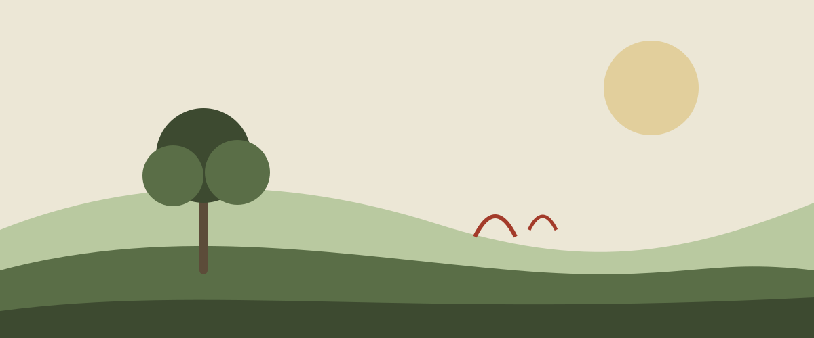
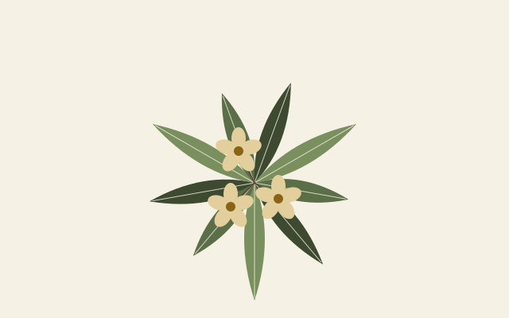
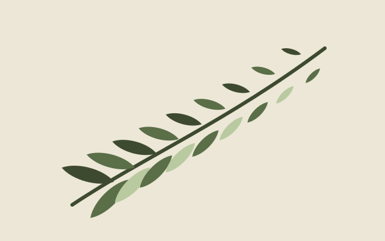
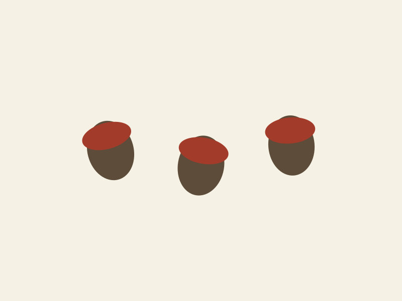
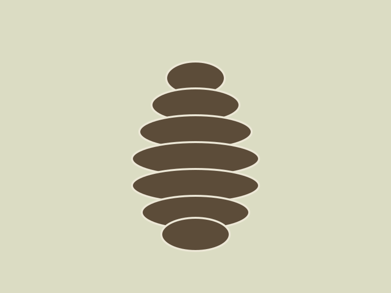
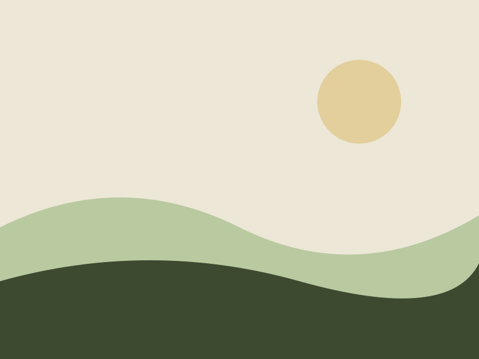
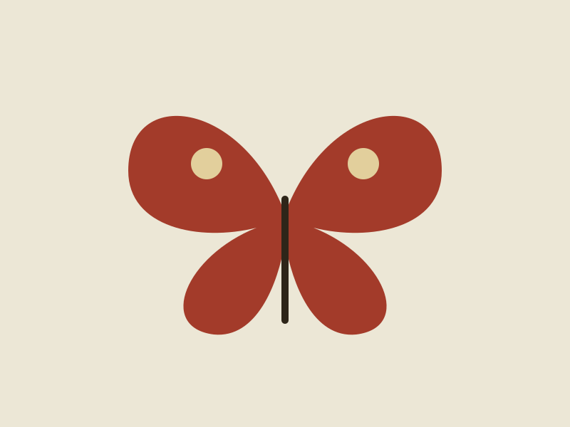
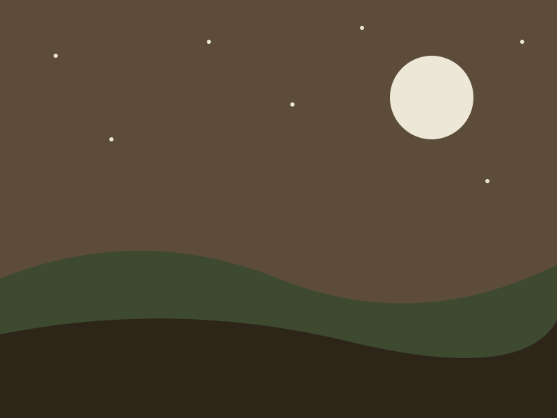

No. 4
Quaking grass
Briza media L.
- Collected
- Top meadow, June
- Habit
- Tufted grass, 30 cm
- Soil
- Thin chalk, full sun

Herbarium of the Natural template
Geum rivale L.
A retemplate template
Cream paper and ink by day. Soil by night.
Natural sets a page like a herbarium sheet: rust for what you can press, moss for the labels, a hairline for everything else. After dark the paper is earth and the ink is cream. The markup is the same as every template here; only the cupboard differs.
Cards are the drawers of the cupboard. Add natural-specimen and the picture is mounted on the sheet with a label glued under it: a common name in Fraunces, the binomial in italic, and a list of where it came from and what it wants. The list is a <dl>, so the data stays data. Take css/, js/theme.js and assets/ and you have the whole template; everything else on this page is here to show it.

No. 4
Briza media L.

No. 7
Primula vulgaris Huds.

No. 12
Asplenium scolopendrium L.
Horizontal cards put the picture on the left or, with card-media-end, on the right; on a narrow screen they stack. Two entries from the autumn book, and below them the template's own dynamic card: a pressed specimen taped to the sheet, with a paper tag hanging off its corner. Rest on it and the tag lifts. Tape, tag and mount are pseudo-elements, so the markup is the ordinary card's.

9 October
A heavy year. Gathered a hatful from the two old trees, sowed forty in root trainers and left the rest for the jays.

22 October
Closed after the rain, open again by the stove. Seed shaken out onto a tray: perhaps two hundred, most of them empty.

Helianthus annuus L.
Came up from a dropped bird seed and stood two metres tall by August. Pressed one head for the book before the finches had it. The tag's text is a token, so each card can carry its own number.
The fifty-fifty block gives the picture half the width and the words the other half. With natural-spread the picture becomes a mounted sheet and the words lose their box and gain the notebook's rust margin, so the two read as one opening of the guide. On a phone the sheet comes first.

Pl. II
Plantain, primrose, foxglove in its first year: the leaves lie flat to the ground where the frost is weakest and the light is theirs alone. Lift one in February and the roots are already at work. Plant the rosette-formers in autumn and they will have a season's start on anything sown in spring.
How the spread is builtAccordions are native <details> elements. Give a group the same name and opening one closes the rest, with no script. Add natural-key and the group is set as a dichotomous key: the leads come in pairs, numbered by a CSS counter, and each opens on where it takes you. Start at 1a.
Asplenium scolopendrium L.
Hart's-tongue fern. Evergreen; spore lines in pairs on the back. Walls, well mouths, the foot of north-facing steps. No. 12 in the guide.
Go to 2.
Polystichum setiferum (Forssk.) T. Moore ex Woyn.
Soft shield fern. Arching, finely cut, mostly evergreen. Hedge banks and the shady side of the wood.
Dryopteris filix-mas (L.) Schott
Male fern. Dies back in a hard winter and comes again in April. Will grow almost anywhere that is not baked.
A single accordion stands on its own.
Not any more. The dark half is a flat deep brown, --pal-bg0, with the same faint moss tint in the corner as the paper has by day. An earlier build laid a noise texture under it; the owner found it did not look like soil, so the colour stays and the grain is gone.
Click any of them. The lightbox is a <dialog>; the arrows and the thumbnails are plain links, and Esc closes it.





Buttons are inked rectangles; the primary one is rust; natural-stamp is a rubber stamp in moss with a double rule. A switch is a checkbox with role="switch" and turns moss when it is on. Badges are stock labels; banners are notices with a coloured edge.
Tables have uppercase column heads and hairline rows, and sit in a wrapper that scrolls sideways when they are wider than the page. Add natural-calendar and the table is a planting calendar: a month per column, a mark per cell, the plant's name in italic. The marks are backgrounds in the feedback colours, with the word in a hidden span for anyone reading by ear.
| Plant | J | F | M | A | M | J | J | A | S | O | N | D |
|---|---|---|---|---|---|---|---|---|---|---|---|---|
| Water avens | Sow | Sow | Flowers | Flowers | Flowers | Lift and divide | Lift and divide | |||||
| Primrose | Flowers | Flowers | Flowers | Sow | Sow | Lift and divide | Lift and divide | |||||
| Quaking grass | Sow | Sow | Flowers | Flowers | Flowers | |||||||
| Hart's-tongue fern | Lift and divide | Sow spores | Sow spores | |||||||||
| Field maple | Plant bare-root | Plant bare-root | Flowers | Sow | Plant bare-root | Plant bare-root |
Dialogs are native too. The button below opens one; it closes itself through a form.
Prose is what most pages are made of, so .prose styles every construct a markdown renderer produces: headings in Fraunces, quotes in italic with a moss rule, code blocks with a green margin. The blog post page runs the full test document through it; defaults shows every bare element.
A garden is a record of decisions. So is a stylesheet.
Collecting book, 4 September
Water avens still in flower by the brook, later than the book says. Took one for the sheet and left the rest to seed. Soil cold at a hand's depth already.
The note is a page from this book: ruled lines and a rust margin, one class, documented with the rest of the flare.